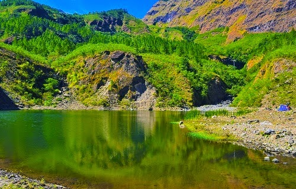
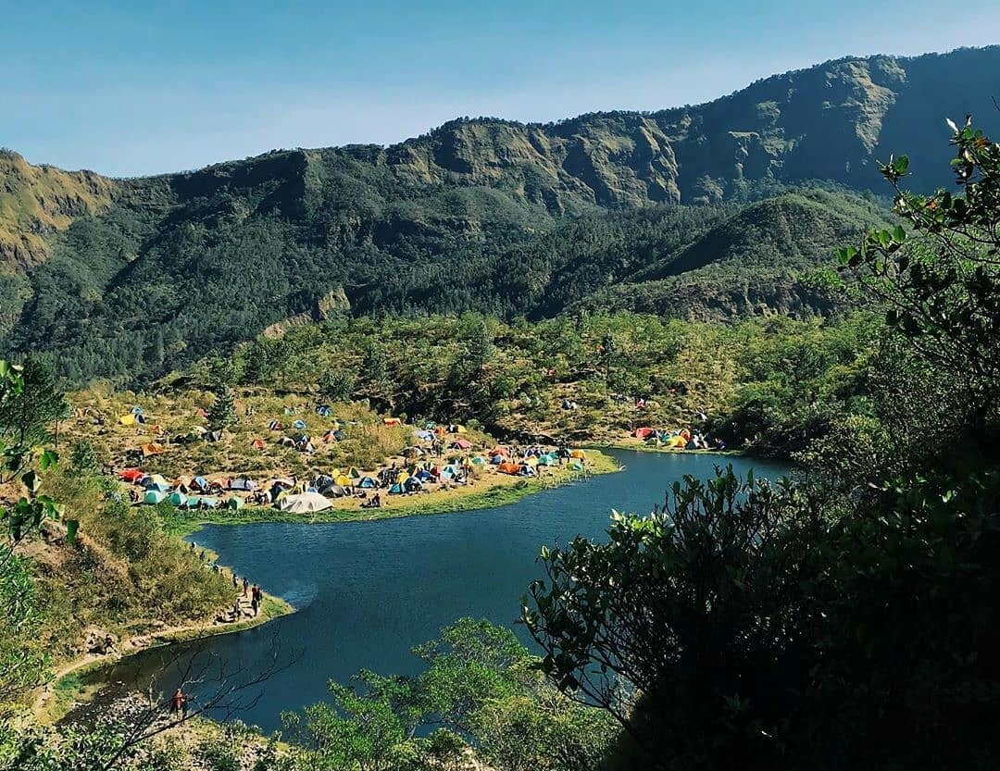

Danau Tanralili

Danau Tanralili
Terletak di kaki Gunung Bawakaraeng, tempat wisata ini digandrungi oleh kaum anak muda. Bagaimana tidak, perjalanan yang harus ditempuh untuk sampai kesana cukup menantang keberanian. Danau Tanralili memberikan kenyamanan penuh karena tempatnya masih alami sehingga mampu menghasilkan suasana menyegarkan

Tanralili
selain itu para pengunjung juga bisa melakukan camping di daerah danau tanralili tersebut, karena tempatnya yang luas dan juga menyuguhkan pemandangan alam yang sangat indah dan pastinya akan memberikan kesan yang sangat istimewa bagi wisatawan yang mengunjungngi nya